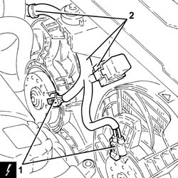
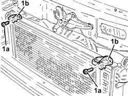
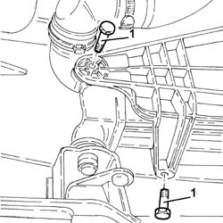
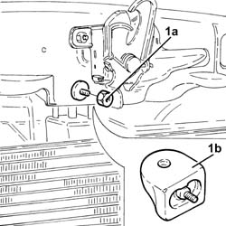
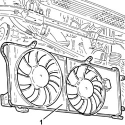

1088E11 fans with single engine duct - r+r
- Path
- Procedures > 10 ENGINE > 1088 ENGINE COOLING > 1088E COOLANT TEMPERATURE CONTROL DEVICES > 1088E11 fans with single engine duct - r+r
- Kind
- repair procedure (removal / refitting; the operation number is the code)
- Applies to
- all engines; all production periods
- Interactive page
- https://sloeber94.github.io/elrnDB-fDbl/en/#/2584440
Applies to: all engines; all production periods
 Removing
Removing
 Refitting
RefittingPosition the car on the ramp.
Carry out 5530B10 battery - r+r .
Carry out 5530B52 Battery DRIP TRAY/SUPPORT - R.R. .
Carry out 7055B54 under-engine guard - r r .
Carry out 1048A10 air cleaner filtering element - replace .
Carry out 1048B50 turbo charger intercooler - r + r .
Carry out 7210E10 R.R. FRONT BUMPER .
Disconnect the coolant inlet and outlet hoses from the radiator.
1. Disconnect the electrical connections from the engine cooling fans.
 | Name | Connector |
|---|---|---|
1 | Engine electric fan motor | N11 |
| Name | Connector |
|---|---|---|
1 | Engine electric fan motor | N12 |
2. Release the electrical wiring from the fastenings and move it away from the fans.

Applies to: all engines; all production periods
Removing
RefittingPosition the vehicle on the ramp.
Proceed with the removal 5530B10 battery - r+r .
Proceed with the removal 5530B52 Battery DRIP TRAY/SUPPORT - R.R. .
Proceed with the removal 7055B54 under-engine guard - r r .
Proceed with the removal 1048A10 air cleaner filtering element - replace .
Proceed with the removal 1048B50 turbo charger intercooler - r + r .
Proceed with the removal 7210E10 R.R. FRONT BUMPER .
Disconnect the coolant inlet and outlet hoses from the radiator.
1. Disconnect the electrical connections from the engine cooling fans.
| Name | Connector |
|---|---|---|
1 | Engine electric fan motor | N11 |
| Name | Connector |
|---|---|---|
1 | Engine electric fan motor | N12 |
2. Release the electrical wiring from the fastenings and move it away from the fans.
Applies to: all engines; all production periods
1. Undo the bolts (1a) and remove the brackets (1b) joining the air conditioning condenser - radiator - fans.

Applies to: all engines; all production periods
1. Undo the bolts (1a) and remove the brackets (1b) joining the air conditioning condenser - radiator - fans.
Applies to: all engines; all production periods
1. Undo the side bolts fixing the fans to the radiator.

Applies to: all engines; all production periods
1. Undo the side bolts fixing the fans to the radiator.
Applies to: all engines; all production periods
1. Undo the nut (1a) and remove the upper centre radiator support (1b).

Applies to: all engines; all production periods
1. Undo the nut (1a) and remove the upper centre radiator support (1b).
Applies to: all engines; all production periods
1. Release the engine cooling fans and remove them.

Applies to: all engines; all production periods
1. Release the engine cooling fans and remove them.
Applies to: all engines; all production periods
Refitting
RemovingPlace the engine cooling fans back in their housings.
Place the upper central radiator support back in its housing and secure it using the nut.
Place the brackets joining the air conditioning condenser - radiator - fans back in their housings and secure them using the bolts.
Tighten the lower bolts fixing the fans to the radiator.
Connect the electrical connections to the engine cooling fans.
| Name | Connector |
|---|---|---|
- | Engine electric fan motor | N11 |
| Name | Connector |
|---|---|---|
- | Engine electric fan motor | N12 |
Connect the coolant inlet and outlet hoses to the radiator.
Carry out 7210E10 R.R. FRONT BUMPER .
Carry out 1048B50 turbo charger intercooler - r + r .
Carry out 1048A10 air cleaner filtering element - replace .
Carry out 7055B54 under-engine guard - r r .
Carry out 5530B52 Battery DRIP TRAY/SUPPORT - R.R. .
Carry out 5530B10 battery - r+r .
Refill the engine cooling system with coolant 0010T20 coolant change .
Remove the car from the ramps.
Applies to: all engines; all production periods
Refitting
RemovingPlace the engine cooling fans back in their housings.
Place the upper centre radiator support back in its housing and secure it using the nut.
Place the brackets joining the air conditioning condenser - radiator - fans back in their housings and secure them using the bolts.
Tighten the lower bolts fixing the fans to the radiator.
Connect the coolant inlet and outlet hoses to the radiator.
Proceed with the refitting 7210E10 R.R. FRONT BUMPER .
Proceed with the refitting 1048B50 turbo charger intercooler - r + r .
Proceed with the refitting 1048A10 air cleaner filtering element - replace .
Proceed with the refitting 7055B54 under-engine guard - r r .
Proceed with the refitting 5530B52 Battery DRIP TRAY/SUPPORT - R.R. .
Proceed with the refitting 5530B10 battery - r+r .
Refill the engine cooling system with coolant 0010T20 coolant change .
Remove the car from the ramp.
Topics linked from this page (7)
- 0010T20 coolant change
- 1048A10 air cleaner filtering element - replace
- 1048B50 turbo charger intercooler - r + r
- 5530B10 battery - r+r
- 5530B52 Battery DRIP TRAY/SUPPORT - R.R.
- 7055B54 under-engine guard - r r
- 7210E10 R.R. FRONT BUMPER